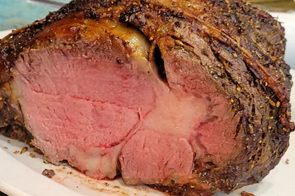

Receta de Costillas de Primera

Ingredientes
- 1 kg de costillas de cerdo
- 2 dientes de ajo
- 1 cucharada de pimentón
- Sal y pimienta al gusto
- 1/2 taza de salsa barbacoa
Instrucciones
- Precalentar el horno a 180°C.
- Frotar las costillas con ajo, pimentón, sal y pimienta.
- Colocar las costillas en una bandeja para hornear y cubrir con papel aluminio.
- Hornear durante 1 hora y 30 minutos.
- Retirar el papel aluminio y cubrir las costillas con salsa barbacoa.
- Hornear por 30 minutos adicionales o hasta que estén doradas.
Sugerencias de Acompañamiento
- Papas al horno
- Ensalada de col
- Pan de ajo
- Verduras asadas